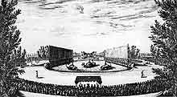

1664
• MOLI�RE
29 janvier : Premi�re repr�sentation du Mariage forc� au Louvre.
28 f�vrier : Bapt�me de Louis, fils de Moli�re, n� le 19 janvier, dont le Roi est le parrain, et Madame Henriette d'Angleterre, duchesse d'Orl�ans, la marraine.
28 mars-22 avril : Cl�ture de P�ques. La troupe conna�t quelques difficult�s avec Mlle Du Croisy. La Grange en devient l'�orateur�.
17 avril : D�but de l'affaire du Tartuffe. Les membres de la Compagnie du Saint-Sacrement cherchent d�j� � faire interdire la pi�ce.
30 avril-22 mai : La troupe est � Versailles pour les f�tes des Plaisirs de l'�le enchant�e.
8 mai : Premi�re de La Princesse d'�lide.
12 mai : Premi�re repr�sentation du Tartuffe.
20 juin : La premi�re pi�ce de Racine, La Theba�de, est repr�sent�e au Palais-Royal par la troupe de Moli�re.
28 octobre : Mort de Du Parc.
9 novembre : Premi�re de La Princesse d'�lide au Palais-Royal
10 novembre : Mort du fils de Moli�re, Louis.
• VIE TH��TRALE ET LITT�RAIRE
�dition subreptice des Maximes de La Rochefoucauld.
La Fontaine, Nouvelles en vers. Corneille, Othon.
• POLITIQUE ET SOCI�T�
Dispersion des religieuses de Port-Royal.
Condamnation de Fouquet � la prison � vie.
Cr�ation des Compagnies des Indes.
• ARTS, SCIENCES ET RELIGION
Saint-�vremond, Jugement sur S�n�que, Plutarque et P�trone.
